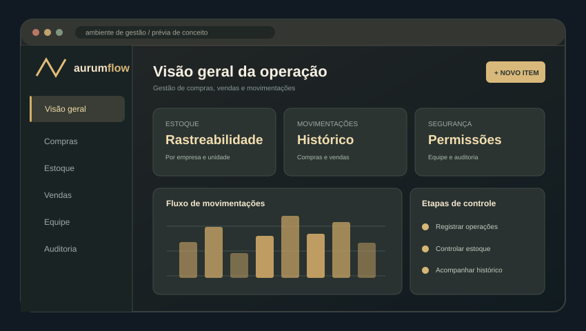
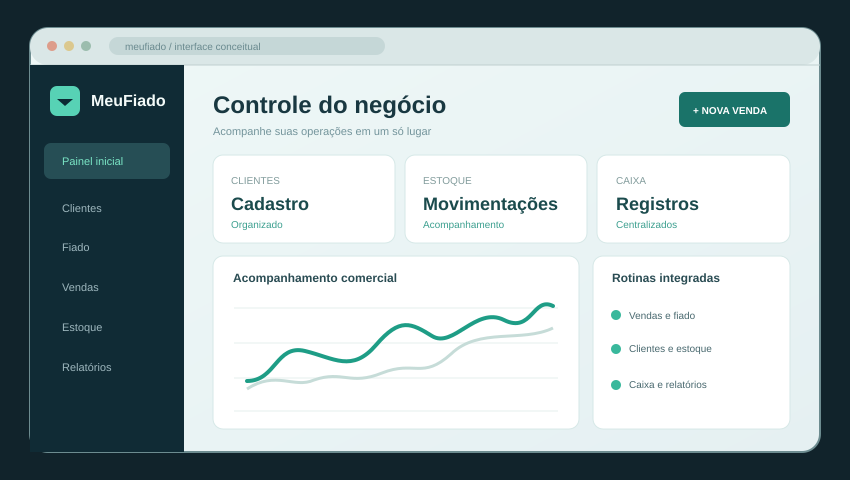

SERVIÇO / 01
Sites & landing pages
Experiências responsivas que apresentam seu negócio, destacam seus diferenciais e facilitam o contato.
Presença digital · SEO · ResponsividadeSou Victor Hugo Miranda, desenvolvedor focado em transformar necessidades de negócios em produtos digitais funcionais, elegantes e intuitivos.
Tenho formação em Sistemas de Informação e sigo me aprofundando em Engenharia de Software. Trabalho na construção de interfaces, integrações e sistemas que simplificam processos e melhoram a experiência de quem usa.
Gosto de acompanhar o projeto da ideia à publicação: entender o problema, planejar a solução, desenvolver e melhorar continuamente.
Não é só sobre colocar algo no ar. É construir uma presença digital que represente a marca e uma solução que faça sentido no dia a dia.
Experiências responsivas que apresentam seu negócio, destacam seus diferenciais e facilitam o contato.
Presença digital · SEO · ResponsividadeFerramentas para organizar operações, centralizar dados e reduzir tarefas manuais.
Gestão · Integrações · AutomaçãoAplicações web com autenticação, regras de negócio e estrutura pensada para crescer.
Produto digital · Banco de dados · EscalaUma seleção de projetos reais, com desafios diferentes e soluções feitas para cada contexto.
Presença digital para uma academia de jiu-jítsu, com apresentação das modalidades, experiência responsiva e fluxo de agendamento de aulas. O trabalho também envolveu publicação, domínio próprio e fundamentos de SEO.

PRÉVIA ILUSTRATIVAPlataforma de gestão para operações com metais e joias. Reúne processos de compra, estoque, permissões por equipe e trilhas de auditoria para oferecer mais controle à operação.

PRÉVIA ILUSTRATIVASistema para apoiar a rotina de pequenos negócios, reunindo controle de fiado, vendas, estoque, caixa, fornecedores e relatórios em um ambiente centralizado.
Site personalizado com história do casal, galeria, convite animado, contagem regressiva, lista de presentes e confirmação de presença.
* Projeto Pagels com repositório público e domínio configurado. A disponibilidade do domínio pode variar.
Se você precisa de um site, sistema ou produto digital, vamos conversar sobre o problema e encontrar um caminho para resolvê-lo.
script.js antes de publicar.